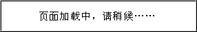

As this sample page demonstrates, WinLIKE windows can have different skins. You can even build your own skins. See
58_develop_onevent_winlist.html
for a
Windows Vista
skin.
Download other free skins from
www.winlike.net
or buy 100 great skins from
www.nofearsoftware.com
for only 30 US$